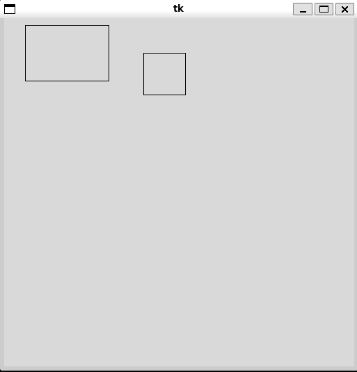

a_list = [5, 20, 15, 6, 123]
value = a_list.pop()
print(value)123list class has a method pop which removes elements from the listclass keyword
self parameter as the first argument, referencing the object the method is invoked on
class Employee:
def __init__(self, first_name, last_name, salary):
self.id = -1 # placeholder value
self.first_name = first_name
self.last_name = last_name
self._salary = salary
self.benefits = 1000
def get_salary(self):
return self._salary
alice = Employee("Alice", "A", 10_000)
bob = Employee("Bob", "B", 8_000)
print(f"alice:", alice)
print(f"bob.get_salary():", bob.get_salary())alice: <__main__.Employee object at 0x7f0b1437fe00>
bob.get_salary(): 8000Employee class representing someone employed at a company.
id, first_name, last_name and benefits and a protected _salary attributeget_salary to access the protected _salary variable__init__ Method__init__ is called whenever a new instance of a class is created__init__ method
__init__ is used for populating the initial state of an objectalice and bob both are populated via the __init__ method_ denotes a method or attribute that is not intended to be accessed outside the class it is defined on
Employee example above we can see _salary is protectedEmployee instances up into an Employees collection objectclass Employees:
def __init__(self):
self.employee_dict = {} # create an empty dictionary
self._next_id = 1
def add_employee(self, employee):
employee.id = self._next_id
self._next_id += 1
self.employee_dict[employee.id : employee]
def list_employees(self):
for employee_id in self.employee_dict:
employee = self.employee_dict[employee_id]
print(f"{employee_id}: {employee.last_name}, {employee.first_name}")
employees = Employees()
employees.add_employee(alice)
employees.add_employee(bob)
employees.list_employees()
print("alice.id:", alice.id)--------------------------------------------------------------------------- KeyError Traceback (most recent call last) Cell In[3], line 20 16 print(f"{employee_id}: {employee.last_name}, {employee.first_name}") 17 18 19 employees = Employees() ---> 20 employees.add_employee(alice) 21 employees.add_employee(bob) 22 23 employees.list_employees() Cell In[3], line 11, in Employees.add_employee(self, employee) 7 8 employee.id = self._next_id 9 self._next_id += 1 10 ---> 11 self.employee_dict[employee.id : employee] KeyError: slice(1, <__main__.Employee object at 0x7f0b1437fe00>, None)
Employees collection class automatically handles assigning new id’s to Employee objects as they are added to the collection via the add_employee method
super() to invoke methods on the parent
__init__ when a child __init__ is invokedTempEmployee
Employee but has no benefits and has a contract end-datefrom datetime import datetime, timedelta
class TempEmployee(Employee):
def __init__(self, first_name, last_name, salary, contract_end_date):
super().__init__(first_name, last_name, salary)
self.benefits = 0
self.end_date = contract_end_date
def contract_period_left(self):
return self.end_date - datetime.now()
charlie = TempEmployee("Charlie", "C", 20_000, datetime.now() + timedelta(days=10))
print("Charlie has", charlie.contract_period_left, "until their contract expires")Charlie has <bound method TempEmployee.contract_period_left of <__main__.TempEmployee object at 0x7f0b04bd4d70>> until their contract expiresHourlyWorker class
get_salary methodclass HourlyWorker(Employee):
def __init__(self, first_name, last_name, hourly_rate, average_hours):
super().__init__(first_name, last_name, hourly_rate)
self.average_hours = average_hours
def get_salary(self):
return self.average_hours * super().get_salary()
dani = HourlyWorker("Dani", "D", 35, 60)
print("Dani's estimated salary is:", dani.get_salary())Dani's estimated salary is: 2100Speaker
PublicEmployee class that inherits the finance methods from Employee and the job role methods from Speakerclass Speaker:
def invite_to_talk(self):
print("Invited to talk...")
def give_talk(self):
print("Delivered the talk...")
class PublicEmployee(Employee, Speaker):
def __init__(self, first_name, last_name, salary):
super().__init__(first_name, last_name, salary)
emily = PublicEmployee("Emily", "E", 10_000)
emily.invite_to_talk()
emily.give_talk()
print(f"emily got paid ${emily.get_salary()} last month")Invited to talk...
Delivered the talk...
emily got paid $10000 last monthCanvas that draws a rectangle and a subclass to draw a squareTkinter in Quarto
Quarto, the program I use to generate these notes is unable to display Tkinter examples as native code. They will either be supplied as standalone scripts or as screenshots of the output.
import tkinter
class Rectangle():
def __init__(self, canvas: tkinter.Canvas):
self.canvas = canvas
def draw(self, x, y, width, height):
self.canvas.create_rectangle(x, y, x+w, y+w)
class Square(Rectangle):
def __init__(self, canvas):
super().__init__(canvas)
def draw(self, x, y, w):
super().draw(x, y, w, w)
def main():
root = tkinter.Tk()
canvas = tkinter.Canvas()
rectangle = Rectangle(Canvas)
rectangle.draw(30, 10, 120, 80)
square = Square(canvas)
square.draw(200, 50, 60)
if __name__ == "__main__":
main()You can find the code above in rectanges.py
You should see a figure like below

Python has four approximate scopes
selfThis is not a formal explanation of Python’s scoping rules, but rather a hueristic to keep in mind
For example, consider the scope of the variables shown below,
global_variable = "Hello, World!" # a global variable
class ShowData:
local_idea = 3.56 # class variable
def __init__(self, value):
self._instvar = value
def method(self):
method_var = 3
print("local scope variable:", method_var)
print("class variable:", ShowData.local_idea)
print("instance variable:", self._instvar)
print("Global variable:", global_variable)
d1 = ShowData("Hello")
d1.method()
d2 = ShowData("World")
d2.method()local scope variable: 3
class variable: 3.56
instance variable: Hello
Global variable: Hello, World!
local scope variable: 3
class variable: 3.56
instance variable: World
Global variable: Hello, World!class ShowData_2:
def __init__(self):
self._instvar = 3.53
def get_instvar(self):
return self._instvar
def set_instvar(self, value):
self._instvar = value
d1 = ShowData_2()
print("d1.get_instvar():", d1.get_instvar())
print("calling d1.get_instvar(5)")
d1.set_instvar(5)
print("d1.get_instvar():", d1.get_instvar())d1.get_instvar(): 3.53
calling d1.get_instvar(5)
d1.get_instvar(): 5d1.instvar: 3.53
calling d1.instvar = 5
d1.instvar: 3.53variable: typeadd_nums(float, float) called
summer.add_nums(12.0, 2.3): 14.3functools.singledispatch can be used if you want that functionalityclass keyword